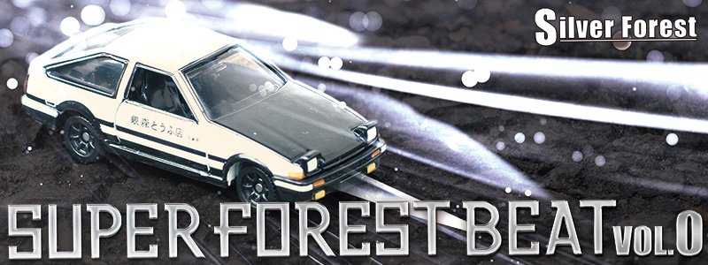

| |||||||||||||||||||||||||||||||||||||||||||||||||||||||||||||||||||||||||
|
| |||||||||||||||||||||||||||||||||||||||||||||||||||||||||||||||||||||||||
| Top - chill out vacation - Super Forest Beat VOL.0 - とうほうインスパイア - BESTⅢ - BESTⅣ - Twitter | |||||||||||||||||||||||||||||||||||||||||||||||||||||||||||||||||||||||||
|
■東方アレンジCD「Super Forest Beat VOL.0」 8月11日(金) 夏コミC92 東5ホール シ-51b「Silver Forest」で1000円にて初頒布予定 ■まさかのシリーズ化？ 「Super Forest Beat VOL.1」 はこちら   | |||||||||||||||||||||||||||||||||||||||||||||||||||||||||||||||||||||||||
■Super Forest Beat VOL.0 収録曲詳細 mp3試聴
| |||||||||||||||||||||||||||||||||||||||||||||||||||||||||||||||||||||||||